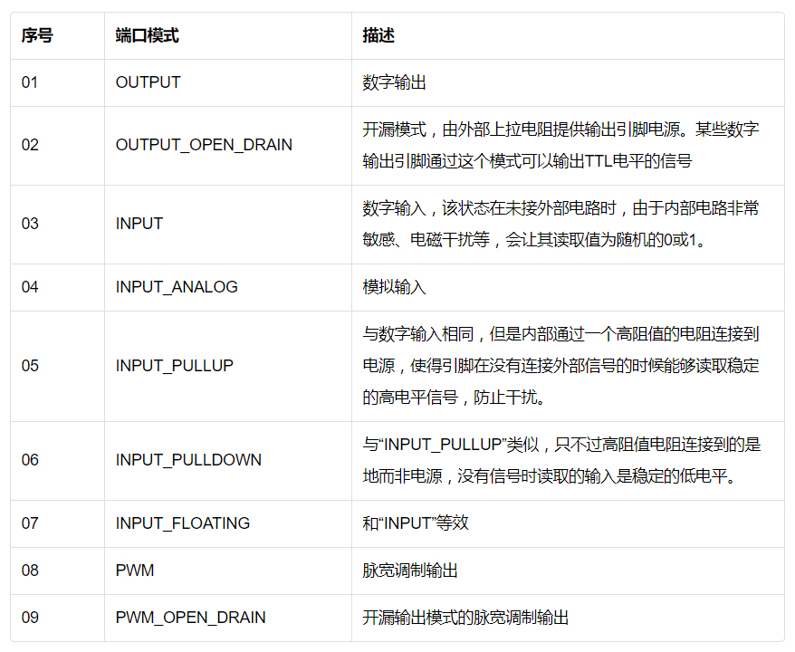
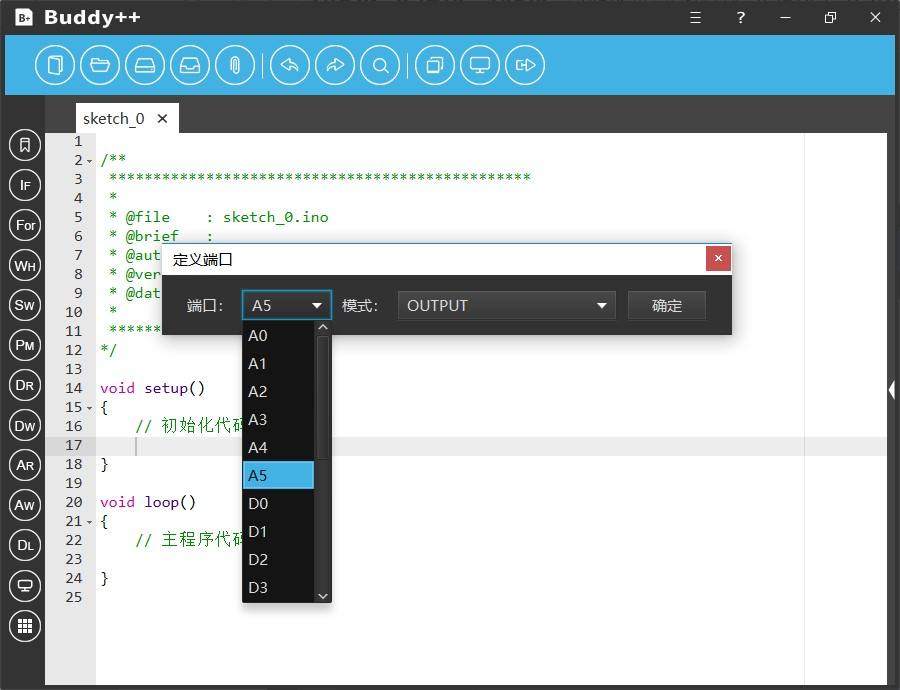
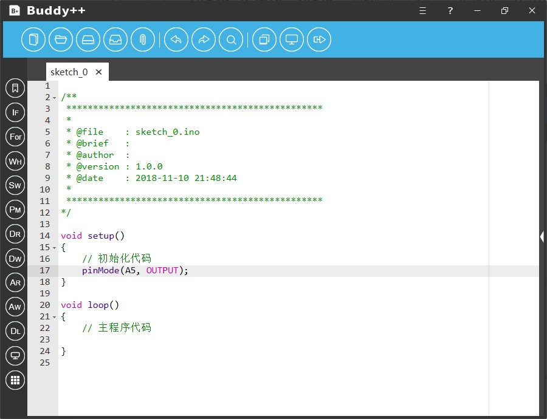

需要注意的是，如果在使用某引脚前没有设定pinMode()或者pinMode设置模式不正确，引脚输入输出过程可能会出现一些不可预料的错误。
pinMode(pin, mode)函数用于配置Arduino引脚的模式，其为一个无返回值的函数，pinMode()函数常放在setup()函数中来确定引脚的功能。参数pin表示所要配置的引脚，mode表示需要的模式，一般为INPUT或OUTPUT，辅助工具中已经为开发者提供了相应的选项，更多模式参数请参看下表：

使用时开发者点击左侧工具栏纵向第六个图样为“PM”简写的图标即可弹出“PinMode端口设置”工具。对话框需要开发者通过下来菜单选择将要进行配置的端口和指定的模式，选定后点击确定按钮，工具将会在代码区指定区域生成相应的代码。

